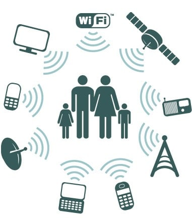

Inquinamento elettromagnetico o elettrosmog
Il fenomeno definito "inquinamento elettromagnetico" o "elettrosmog" è legato alla generazione di campi elettrici, magnetici ed elettromagnetici artificiali, cioè non attribuibili al naturale fondo terrestre o ad eventi naturali.
Tra le principali sorgenti artificiali di campi elettromagnetici nell´ambiente possiamo distinguere:
i campi elettromagnetici a bassa frequenza, generati dagli apparati per il trasporto e la distribuzione dell´energia elettrica o elettrodotti. Essi, denominati comunemente ELF, sono costituiti da linee elettriche ad altissima, alta, media e bassa tensione, da centrali di produzione e da stazioni e cabine di trasformazione dell´energia elettrica.
i campi elettromagnetici ad alta frequenza, generati dagli impianti per radiotelecomunicazione. Essi comprendono i sistemi per diffusione radio e televisiva, gli impianti per la telefonia cellulare o mobile o stazioni radio base, gli impianti di collegamento radiofonico, televisivo e per telefonia mobile e fissa (ponti radio) ed i radar.
Ci sono anche altre sorgenti in ambiente domestico e negli ambienti di vita quotidiana, che producono campi elettromagnetici, come i dispositivi ad alimentazione elettrica (quali elettrodomestici e computers) ed i telefoni cellulari.

Rischi per la salute
L'impatto delle radiazioni non ionizzanti sull'uomo dipende dall'intensità e dalla frequenza delle radiazioni stesse.
Le radiazioni molto intense a bassa frequenza possono provocare impulsi nervosi e contrazioni muscolari involontarie, mentre quelle intense ad alta frequenza possono causare un surriscaldamento dei tessuti. I valori limite internazionali proteggono dalle radiazioni all'origine di tali effetti.
Diversi studi forniscono tuttavia indicazioni sul fatto che anche in caso di una debole esposizione alle radiazioni (inferiore a tali valori limite) insorgono effetti biologici. Deboli radiazioni ad alta frequenza possono modificare i flussi cerebrali e influenzare l'irrigazione e il metabolismo del cervello. Per il momento non è dato sapere se questi effetti siano rilevanti per la salute.
In base alle indagini condotte finora, in caso di esposizione a deboli radiazioni non ionizzanti non sono presumibili danni alla salute a breve-medio termine. Quanto alle ripercussioni di un'esposizione a lungo termine non vi sono tuttavia ancora dati certi. Si presume ad esempio che le radiazioni a bassa frequenza deboli aumentino il rischio di leucemia nei bambini. L'Organizzazione mondiale della sanità (OMS) ha classificato come potenzialmente cancerogene per l'uomo sia le radiazioni a bassa frequenza sia quelle ad alta frequenza. Alcune persone sono inoltre convinte di soffrire di disturbi o di danni alla salute già in presenza di radiazioni molto deboli. La ricerca su come aiutare tali persone cosiddette elettrosensibili è solo agli inizi.
La vicinanza di antenne di telefonia mobile o linee ad alta tensione può causare il deprezzamento degli immobili, in quanto le radiazioni che emettono vengono percepite come un rischio.